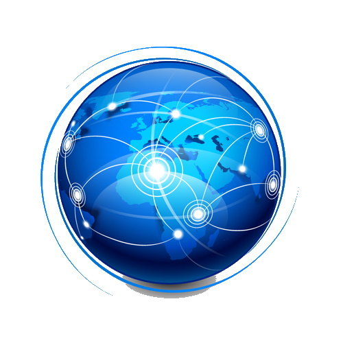

Voici un extrait du programme de SNT (B.O.):
Souple et universel, internet est devenu le moyen de communication principal entre les hommes et avec les machines.
Internet est né en 1983. Il est défini par le protocole IP (Internet Protocol), ensemble de normes qui permettent d'identifier et de nommer de façon uniforme tous les ordinateurs ou objets qui lui sont connectés. IP est accompagné de protocoles de transmission pour l'information par paquets, le principal étant TCP/IP. Internet s'appuie sur une grande variété de réseaux physiques où IP est implémenté. Il uniformise l'accès à tous les ordinateurs, les téléphones et les objets connectés.
C'est le réseau des réseaux. Couches , protocoles , adressage , routage, DNS...
mais c'est aussi le Web ?
Oui. Euh... non!.
Parler d'Internet, ce n'est pas parler d'une science, mais plutôt de techno-science (d'"artisanat" selon Louis Pouzin, pionnier d'Internet) où il est question de théorie des graphes, théorie de l'information ("Théorie mathématique de l'information" de Shannon en 1948), traitement du signal, systèmes distribués, cryptographie, métrologie, statistiques.
Le premier message transmis fut : "LO" le 29/10/1969 (l'objectif était d'envoyer un long texte dont le mot "login" mais seuls les deux premières lettres furent envoyées : taux de paquets reçus de 1/20 000 !).
L'expression, qui tombe en désuétude, "surfer sur internet" vient de Mark Mc Cahill en 1992, un pionnier d'Internet.
Un réseau est un ensemble de lignes ou d'éléments qui communiquent ou s'entrecroisent (dictionnaire Larousse). En informatique, c'est un ensemble d'équipements interconnectés par des télécommunications, celles-ci étant définies comme des communications à distance. Les réseaux peuvent être en bus, en anneau ou en étoile. Différents noms sont attribués aux réseaux en fonction de leur étendue : bus (quelques centimètres), CAN (Controlled Area Network, dans une voiture par exemple), PAN (Personal, réseau d'un domicile), LAN (Local, réseau d'un lycée), MAN (Metropolitan, réseau d'une ville) et le WAN (Wide, réseau international). Et pour relier tous ces réseaux : l'INTERNETWORK, autrement dit Internet !
Il y a plusieurs types d'acteurs dans les réseaux : les opérateurs (Orange, Free, SFR,...) et fournisseurs de service (GAFA,...), les usagers mais aussi les équipementiers (Samsung, Huawei,...), les instances de normalisation (UIT, IETF, les régulateurs (en France, l'ARCEP et le CSA) et les législateurs (l'Union Européenne avec la RGPD).
Des réseaux sont publics (mis en place par un opérateur télécom) : téléphonie fixe, téléphonie mobile et Internet. D'autres sont privés : le réseau Swift des banques, les réseaux VPN (Virtual Private Network), le réseau Rubis de la Gendarmerie... Leur gestion peut être centralisée ou décentralisée (réseaux pair-à-pair) ou organisée en groupes de travail. Le mode de transmission peut être une large bande ou une bande de base.
L'accès aux réseaux est soit filaire, soit radio (ondes électromagnétiques).

Aujourd'hui, les moyens de télécommunication sont divers : téléphone, radio, télévision, internet. Certains sont à sens unique (ou quasiment : radio, TV) : on parle de broadcast ou diffusion, d'autres sont à l'inverse en mode collecte (réseaux "ad hoc", un système central récupère des informations venant de divers terminaux). Entre ces deux extrêmes, comme Internet, les échanges d'informations peuvent aller dans les deux sens, par commutation et routage.
Les grandes étapes du transport d'une information sont : la capture de cette information (fichier informatique, micro), le codage de cette information ("codage source", en binaire : suite de 0 et de 1), les codages canaux, le décodage canal, le décodage source et enfin la restitution au destinataire. L'étude des encodages Ascii et Unicode est au programme de la spécialité NSI.
La sécurité dans les réseaux porte sur :
Quelques conseils :
Selon le modèle OSI (Open Systems Interconnection) de l'ISO, il y a 7 couches à considérer :
On peut retenir l'ordre de ces 7 couches par ce moyen mnémotechnique : "All People Seem To Need Data Process". Chaque couche fournit des services à la couche suivante.
Mais pour Internet, ce modèle ne s'est pas imposé : critiques.
Le modèle qui s'est imposé est plutôt le modèle TCP/IP en 4 couches:
L'accès au réseau peut se faire en filaire (câble coaxial, paire de cuivre torsadée, fibre optique) ou par radio (ondes électromagnétiques) : WiFi, WiMax, 4G, satellite.
Les performances de transmission (rapidité, fiabilité) sont variables, notamment à cause de la technologie et du support physique employé (câble coaxial en cuivre, paire torsadée-RJ45, ADSL, fibre optique, WiFi, satellite...).
La technologie utilisée est le LTE (long term evolution). Le terminal (téléphone, smartphone ou clé 4G) s'appelle "User Equipment". Il contient une carte SIM (Subscriber Identity Module) ou USIM contenant l'identité d'abonnement, unique au monde (n° IMSI). En France, ce numéro commence par 208 puis 01 si l'opérateur est Orange par exemple. Le terminal communique avec une station de base appelée eNodeB (evolved node base station) dont l'élément emblématique est l'antenne (environ 10 000 en France). Celle-ci est un dispositif rayonnant qui transforme une onde électromagnétique en courant alternatif ou réciproquement. Une station de base couvre une surface appelée cellule. La capacité d'une cellule en Mbit/s ne dépend pas de la taille de la cellule. En zone urbaine, ces cellules seront plus petites qu'en zone rurale. Ces eNodeB diffusent régulièrement un signal appelé Voie balise ou beacon channel (ce qui indique l'existence du réseau notamment). Ces eNodeB sont ensuite reliées au réseau IP de l'opérateur, lui-même relié à des routeurs vers Internet. Plus précisément, le réseau Internet ne sait pas gérer la mobilité, a priori. En 4G, la solution retenue est de faire converger les paquets vers une porte d'entrée, un PGW : Packet Gate Way. Comme l'utilisateur peut changer de cellule, les données passent par un équipement intermédiaire : le SGW (Serving Gate Way).

Deux éléments sont centraux dans l'architecture d'un réseau 4G : le MME et le HSS. Ce dernier (Home Subscriber Server) est une base de données des abonnés. Lorsqu'un terminal se connecte à une eNodeB, celle-ci envoie une requête auprès du MME (Mobility Management Entity) pour l'autoriser à utiliser le réseau. Ce MME va alors consulter le HSS pour s'assurer de la présence de l'abonné dans ce HSS (un identifiant temporaire, le TMSI, est également attribué, pour une question de sécurité). Le MME assure également d'autres services de contrôle. Une adresse IP (cf paragraphe ci-dessous) est allouée lors de la mise sous tension du terminal (on parle d'"attachement"), via le chemin suivant : le MME envoie une requête au SGW qui transmet au PGW. Ce dernier retourne une adresse IP transmise successivement au SGW, puis au MME, au eNodeB et à l'UE.
C'est un réseau local (LAN) supporté par des paires torsadées ou par la fibre optique.
L'adressage est le fait d'ajouter une adresse à une information. C'est le moyen pour identifier un équipement (ordinateur, smartphone). L'adressage peut être hiérarchique ou géographique (adresse postale, téléphonie fixe) ou à plat (adresse MAC : Medium Access Control). L'adressage IP est quant à lui sous deux versions : IPv4 et IPv6.
Une adresse IPv4 est codée sur 4 octets (32 bits), séparés par un point. Dans cette adresse, chaque octet est écrit en décimal donc entre 0 et 255. Exemple d'adresse IPv4 : 35.186.248.227 En théorie, il y a 232 adresses possibles, soit un peu plus de 4 milliards, ce qui est insuffisant depuis 2011. D'autant que de nombreuses adresses ne sont jamais utilisées. Vu la croissance exponentielle d'Internet, une autre version est apparue : IPv6. Une autre solution pour contourner ce problème de manque d'adresse est l'adressage dynamique. Celui-ci consiste à attribuer des adresses IP temporaires ce qui permet d'allouer la même adresse à deux clients à deux moments différents (quand le premier n'est plus connecté). A l'inverse, d'autres adresses sont fixes.
Chaque adresse IPv6 est codée sur 16 octets (128 bits), regroupés 2 par 2 et séparés par le symbole :, ce qui permet plus de 3x1038 combinaisons, de quoi largement couvrir les besoins futurs. Exemple d'adresse IPv6 : 2001:41d0:1:1b00:213:186:33:2
IP signifie Internet Protocol. C'est le protocole permettant d'envoyer des informations. Mais il n'est pas fiable à lui seul : des paquets peuvent être perdus, arrivés en double, arrivés dans le désordre. La fiabilité sera assurée par le protocole TCP (cf paragraphe suivant).
La commutation et le routage sont deux actions permettant de faire voyager une information dans un réseau. Conformément au programme de SNT, nous nous limiterons ici au routage. Ce dernier est le fait de déplacer un paquet d'une interface à une autre. Cela se fait en mode non connecté. Les paquets pourront suivre des chemins différents. Ils rencontreront des routeurs : ceux-ci extraient le paquet contenu dans la trame, le commutent et l'encapsulent dans une nouvelle trame pour poursuivre son chemin. Les routeurs contiennent une table de routage (en quelque sorte, une carte routière locale du réseau) qui va indiquer la suite du chemin que la trame doit prendre.
On peut suivre le chemin parcouru (le nombre de routeurs rencontrés, leur adresse et le temps nécessaire) par un paquet IP grâce au programme Traceroute. Voici un exemple, avec également, en dessous, la commande ping qui permet, elle, d'obtenir notamment l'adresse IP du serveur d'un site web :
Il existe deux modèles principaux de communication entre ordinateurs :
Pour cela, chaque ordinateur doit posséder un logiciel (par exemple avec les protocoles emule ou BitTorrent) qui lui permet notamment de savoir qui possède tel ou tel fichier et de contrôler le transfert des données. La rapidité de téléchargement augmente avec le nombre d'internautes concernés.
C'est ce mode qui est la plus grande source de téléchargements. Les couts de mise en service sont bien inférieurs à un véritable serveur, avec une simplicité d'utilisation.'
Autres avantages :
Connaissez-vous des usages légaux ?
Téléchargement d'oeuvres protégées par le droit d'auteur (film, musique, jeux vidéos)
Autres risques:
L'inconvénient principal des réseaux pair-à-pair reste le comportement illicite de certains des utilisateurs.
Site très intéressant sur les réseaux: www.gatoux.com
Un livre référence : "Réseaux" d'Andrew Tanenbaum